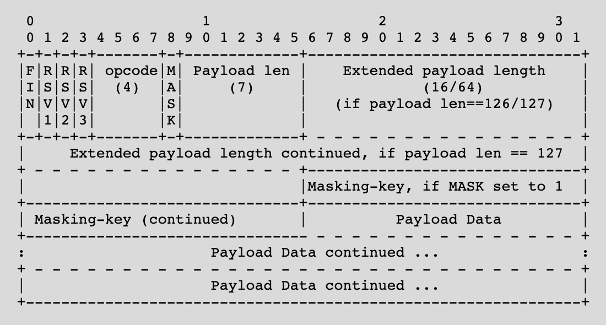

WebSocket Handshake
CSE312 — Web Development
AJAX Summary
- Retrieve/Send data from the server after the page loads without a page reload
- To get new data from the server:
- If the server has new data to send to the client
- Must wait for a poll request
WebSockets
- Two-way communication between server and client
- Server can "push" new data to each client without being prompted by an HTTP request
- Enables real-time [minus network delays] communication between users
- Works by keeping a TCP socket open
WebSocket Overview
- WebSocket protocol:
- Establish a TCP connection
- Client sends an HTTP request to upgrade to the WebSocket protocol
- Server responds confirming the upgrade request
- Client and server keep the TCP connection open
- Client and server send WebSocket messages/frames over the TCP connection until one side closes the connection
WebSocket Handshake
- When the server receives a WebSocket HTTP request
- Take steps to keep this TCP socket open as a WebSocket connection
- These steps ensure that both client and server are speaking the same protocol
- After the handshake, client/server can both send messages over the socket
WebSocket Handshake
- Client sends an HTTP GET request to the WebSocket path
- Client sets headers
- Connection: Upgrade
- Upgrade: websocket
- Sec-WebSocket-Key:
<random_key>
- Server responds with 101 Switching Protocols with headers
- Connection: Upgrade
- Upgrade: websocket
- Sec-WebSocket-Accept:
<accept_response>
WebSocket Handshake
- The client generates a random "Sec-WebSocket-Key" for each new WebSocket connection
- The server appends a specific GUID to this key
- "258EAFA5-E914-47DA-95CA-C5AB0DC85B11"
- Computes the SHA-1 hash
- "Sec-WebSocket-Accept" is the base64 encoding of the hash
- Why?
- Ensure client and server both implement the protocol
- Highly unlikely this value would be returned by accident
- Avoid caching
WebSocket Frames
- Once the connection is established
- Two-way communication via web socket frames
- A frame is a specifically formatted sequence of bits containing the message to be sent
- Yes, bits! (And you thought bytes were fun!)
- Parse these bits to read the message
WebSocket Frame
- https://tools.ietf.org/html/rfc6455#section-5.2
- We'll see how to parse through this on Wednesday

Web Sockets - Browser
- To setup a connection from the browser
- Create a new WebSocket object with the host/path to connect to
- Choose a path and setup your server to accept WS requests on that path
let socket = new WebSocket('ws://' + window.location.host + '/socket');
socket.onmessage = renderMessages;
function sendMessage() {
socket.send(JSON.stringify({'username': username, 'message': message}))
}
function renderMessages(message) {
console.log(message.data);
}
Web Sockets - Browser
- Set onmessage to a function that will be called whenever a message is received
- The argument of the call will contain the message
let socket = new WebSocket('ws://' + window.location.host + '/socket');
socket.onmessage = renderMessages;
function sendMessage() {
socket.send(JSON.stringify({'username': username, 'message': message}))
}
function renderMessages(message) {
console.log(message.data);
}
Web Sockets - Browser
- Call the send method to send a message to the server
- Can give it a String and the WebSocket object will convert it to a frame
- We'll parse this frame on the server
let socket = new WebSocket('ws://' + window.location.host + '/socket');
socket.onmessage = renderMessages;
function sendMessage() {
socket.send(JSON.stringify({'username': username, 'message': message}))
}
function renderMessages(message) {
console.log(message.data);
}